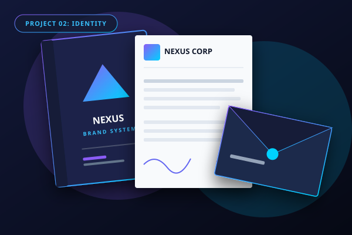
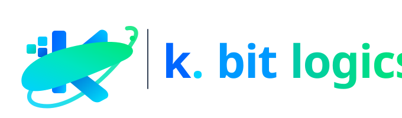

Vector & Brand Identity

k.bitlogics Brand Identity & Logo Design
A comprehensive design case study documenting the creation of a modern, memorable, and geometrically precise vector identity for a technology and creative design brand.
01 • Overview
Project Overview & Background
The objective of the k.bitlogics identity project was to design an iconic, versatile, and enduring logo system that visually bridges the concepts of digital technology ("bit") and strategic intelligence ("logics"). The mark needed to function seamlessly across all modern digital touchpoints—from mobile app icons and web headers to oversized print banners and merchandise.
01
Brand Challenge
Create a mark that avoids cliché tech symbols while remaining instantly recognizable, authoritative, and adaptable to dark and light digital environments.
02
Creative Solution
A fusion of a strong structural 'K' anchor, ascending digital pixel blocks, and a continuous orbital swoosh symbolizing global connectivity and momentum.
03
Key Deliverables
Master vector suite (.AI, .EPS, .SVG), primary and secondary horizontal lockups, standalone square app icons, favicon, and brand color standards.
02 • Goals
Strategic Design Objectives
Every curve, anchor point, and color transition was guided by four fundamental benchmarks:
1. Infinite Mathematical Scalability
Engineered in 100% vector mathematics in Adobe Illustrator so that detail and balance remain flawless whether rendered at a microscopic 16x16 pixel favicon or an ultra-wide 4K commercial billboard.
2. Immediate Memorability & Recognition
Crafted with a distinct geometric silhouette that stands out in crowded tech markets, enabling immediate viewer recall even in grayscale or silhouette format.
3. Modern Technological Aesthetic
Integrating smooth gradient transitions from deep cobalt to electric cyan and mint emerald, establishing an innovative, trustworthy, and forward-looking persona.
4. Cross-Platform Adaptability
Optimized for seamless performance across responsive web layouts, social media avatar circles, dark UI interfaces, and print stationery with zero optical distortion.
03 • Creative Direction
Design Concept & Anatomy
The k.bitlogics mark comprises three harmonized visual metaphors:
A
The Structural Letter 'K'
Acts as the visual anchor. Formed with clean diagonal bevels and a dual-tone blue gradient, it represents structural integrity, confidence, and foundational stability.
B
Digital Data Cubes (Bits)
The floating pixel cubes ascending from the upper left arm embody digital data, modular logic, coding blocks, and progressive growth in technology.
C
The Dynamic Orbital Ring
A swooping planetary trajectory that wraps around the letter K from back to front, creating 3D depth and symbolizing seamless global networking and energy.
04 • Visual Identity System
Color Palette & Typography
A calibrated digital palette designed for high contrast and modern technological vibrancy:
Cyber Blue
#0066FFPrimary Stem / Anchor
Electric Cyan
#00D2FFHighlight & Innovation
Mint Emerald
#00E676Orbital Energy & Growth
Deep Cosmic Void
#070913Dark Theme Contrast
Primary Typeface
Poppins (Geometric Sans-Serif)
Chosen for its clean circular geometry, balanced x-height, and exceptional legibility across both digital screens and physical print applications.
ABCDEFGHIJKLMNOPQRSTUVWXYZ
abcdefghijklmnopqrstuvwxyz
0123456789 • (!@#$%&*)
abcdefghijklmnopqrstuvwxyz
0123456789 • (!@#$%&*)
05 • Execution
Design Process & Workflow
A disciplined, 4-stage creative methodology from initial ideation to master asset delivery:
Phase 01
Discovery & Ideation
Analyzing core brand values, audience demographics, and industry trends to establish the design language of digital intelligence and structural elegance.
Phase 02
Vector Grid Construction
Drafting in Adobe Illustrator on an isometric and orthogonal vector grid to lock in 45-degree angle diagonals, tangent curve alignments, and pixel offsets.
Phase 03
Color Calibration
Balancing smooth multi-stop linear gradients to avoid color muddying. Testing monochrome black/white contrast and dark mode legibility.
Phase 04
Asset Suite Export
Compiling production packages: SVG for web, EPS/PDF for print, transparent PNGs, and responsive app icons across standard resolutions.
06 • Evolution
Concept Evolution & Vector Precision
Comparing the structural vector construction geometry against the final illuminated brand mark:
Vector Wireframe & Geometry

Structural Grid Architecture
Precise vector bezier curves, proportional bit spacing, and calibrated angles establishing symmetry and mathematical weight.
Final Production Identity
Full Color Render & Typography
Enhanced with luminous lighting gradients, refined divider rules, and dual-tone wordmark typography for instant recognition.
07 • Showcase
Final Design Presentation
The completed identity deployed across key brand applications:

Integrated Brand Campaign
The brand mark functions cohesively alongside photography, typography, and marketing assets, reinforcing the brand promise: "Bring Your Brand to Life!".
Explore More
Related Design Projects


Ready to Bring Your Brand to Life?
Whether you need a distinctive vector logo, a complete corporate brand identity, or sleek website design, I deliver bespoke visual solutions tailored to your business goals.